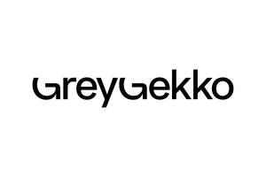

Trade Mark Journal No.2025/027 4 July 2025
UK00004223293 23 June 2025 (35,42)

- Class 35
- Marketing; Advertising and marketing; Advertising and marketing consultancy; Promotional marketing; Influencer marketing; Advertising and marketing services; Marketing consultancy; Product marketing; Affiliate marketing; Marketing consulting; Digital marketing; Advertising, marketing and promotion services; Marketing, advertising and promotion services; Advertising, promotional and marketing services; Advertising, marketing and promotional services; Marketing, advertising, and promotional services; Marketing research; Online marketing; Internet marketing; Marketing services; Business marketing consultancy; Marketing forecasting; Financial marketing; Referral marketing; Marketing studies; On-line advertising and marketing services; Targeted marketing; Marketing analysis; Business marketing services; Advertising copywriting; Marketing information; Distribution of advertising, marketing and promotional material; Investigations of marketing strategy; Direct marketing; Promotion, advertising and marketing of on-line websites; Planning of marketing strategies; Marketing advice; Direct marketing consulting; Consultancy services relating to advertising, publicity and marketing; Dissemination of advertising, marketing and publicity materials; Marketing research services; Marketing assistance; Research services relating to advertising and marketing; Event marketing; Marketing management advice; Design of marketing surveys; Database marketing; Marketing agency services; Promotion [advertising] of business; Business marketing consulting services; Development of marketing concepts; Advertising, marketing and promotional consultancy, advisory and assistance services; Marketing plan development ; Consultancy services in the field of affiliate marketing; Direct marketing services; Copywriting for advertising and promotional purposes; Trade marketing [other than selling]; Marketing analysis services; Consultancy relating to marketing; Advice in the field of business management and marketing; Creative marketing plan development services; Promotional marketing services using audiovisual media; Business marketing consultation services; Recruitment services for sales and marketing personnel; Consultancy regarding advertising communications strategy; Development of marketing strategies and concepts; Advertising services for the promotion of e-commerce; Marketing advisory services; Planning services for marketing studies; Business advice relating to strategic marketing; Consulting services in the field of Internet marketing; Marketing consultation services; Marketing research and analysis; Marketing research or analysis; Providing marketing consulting in the field of social media; Marketing (Business advice relating to -); Business advice relating to marketing; Preparation of marketing surveys; Advertising and marketing services provided by means of social media; Consumer profiling for commercial or marketing purposes; Professional consultancy relating to marketing; Advertising; Advertising and marketing services provided via communications channels; Analysis of marketing trends; Market research and marketing studies; Providing business marketing information; Business consultancy services relating to the marketing of fund raising campaigns; Advertising planning; Brand creation services (advertising and promotion); Publicity and sales promotion services; Developing promotional campaigns for business; Consulting services relating to marketing; Advertising and marketing services provided by means of blogging; Providing advice in the field of business management and marketing; Copywriting; Advertising and promotion services; Consultancy relating to demographics for marketing purposes; Marketing in the framework of software publishing; Information or enquiries on business and marketing; Advertising research; Marketing services in the field of travel; Consultancy regarding advertising communication strategies; Publicity and sales promotion; Advertising and promotional services; Promotional and advertising services; Promotional advertising services; Advertising and publicity; Publicity and advertising; Conducting of marketing studies; Conducting marketing studies; Advertising and publicity services; Search engine marketing services; Advice relating to marketing management; Administration relating to marketing; Sales promotion using audiovisual media; Telephone marketing services [not selling]; Consultancy relating to business advertising; Preparation of marketing plans; Estimations for marketing purposes; Business advice relating to marketing management consultations; Consulting in sales techniques and sales programmes; Analysis relating to marketing; Recruitment advertising; Marketing services in the field of restaurants; Marketing services in the field of dentistry; Real estate marketing analysis; Market research for advertising; Marketing services in the field of web site traffic optimization; Development of promotional campaigns; Real estate marketing; Promotion [advertising] of travel; Planning services for advertising; Development of advertising concepts; Preparation of reports for marketing; Advertising research services; Digital advertising services; Sales promotion; Preparation of advertising campaigns; Design of advertising brochures; Advisory services relating to marketing; Advertising and promotion services and related consulting.
- Class 42
- Product design; Product design and development; Evaluation of product design; Consumer product design; Product design services; Analysis of product design; New product design; Design of products; Design of engineering products; Design and testing for new product development; Packaging design; Design of packaging; Design and development of consumer products; Design and development of engineering products; Design and development of new products; New products (Design of -); Design of industrial products; Analysis and evaluation of product design; Design and development of multimedia products; Design and development of industrial products; Product development; Design services (Packaging -); Design services for packaging; Packaging design services; Brand design services; Design and testing of new products; Design of software; Software design; Website design and development; Industrial packaging design services; Providing information in the field of product design; Software design and development; Design of prototypes; Hardware design; Engineering design; Logo design services; Styling [industrial design]; Packaging design for others; Website design; Product quality testing; Analysis of product development; Technical design; Product testing; Product research; Graphic design services; Graphic design; Evaluation of product development; Design services; Construction design; Computer specification design; Brochure design; Consultancy relating to the design of packaging; Packaging designs; Product research and development; Product development consultation; Design and development of software for website development; Design of artwork; Design services relating to packaging; Product quality evaluation; Illustration services (design); Database design and development; Engineering design services; Design, development and implementation of software; Design of tooling; Industrial design; Design (Industrial -); Design of models; Toy design; Design of manufacturing methods; Commercial interior design; Graphic design of promotional materials; Design of furniture; Furniture design; Design and graphic arts design for the creation of web sites; Design and development of image processing software; Design of graphic software systems; Interior design services; Design consultancy; Product quality testing services; Architectural design; Tool design; Website design services; Custom design services; Retail design services; Graphic illustration design services; Automotive design; Website design consultancy; Design of brand names; Interior design; Design and development of prostheses; Shop design; Commercial design services; Product development for others; Architectural design services; Design services for art-work; Design and development of computer hardware for the manufacturing industry; Design and development of software for inventory management; Consultancy in the design and development of computer hardware; Computer hardware (Consultancy in the design and development of -); Design and development of computer hardware; Design services for architecture; Architecture design services; Design of stationery; Fashion design; Engineering design and consultancy; Design and development of driver software; Design and development of antivirus software; Industrial design services; Pharmaceutical product evaluation; Visual design; Pattern design; Design of clothing; Design and development of word processing software; Design services for the construction industry; Textile design services; Design and development of endoprostheses; Design services for furniture; Design and development of computer software; Computer software design and development; Preparation of architectural design; Design of tools; Jewelry design; Advisory services in the field of product development and quality improvement of software; Webpage design services; Design and development of medical technology; Design and development of new technology for others; Ship design; Industrial engineering design services; Design and development of computer hardware for the manufacturing industries; Design and development of databases; Design and development of computer hardware architecture; Platforms for graphic design as software as a service [SaaS]; Design and development of software for instant messaging; Design of moulds; Database design.
Grey Gekko Ltd